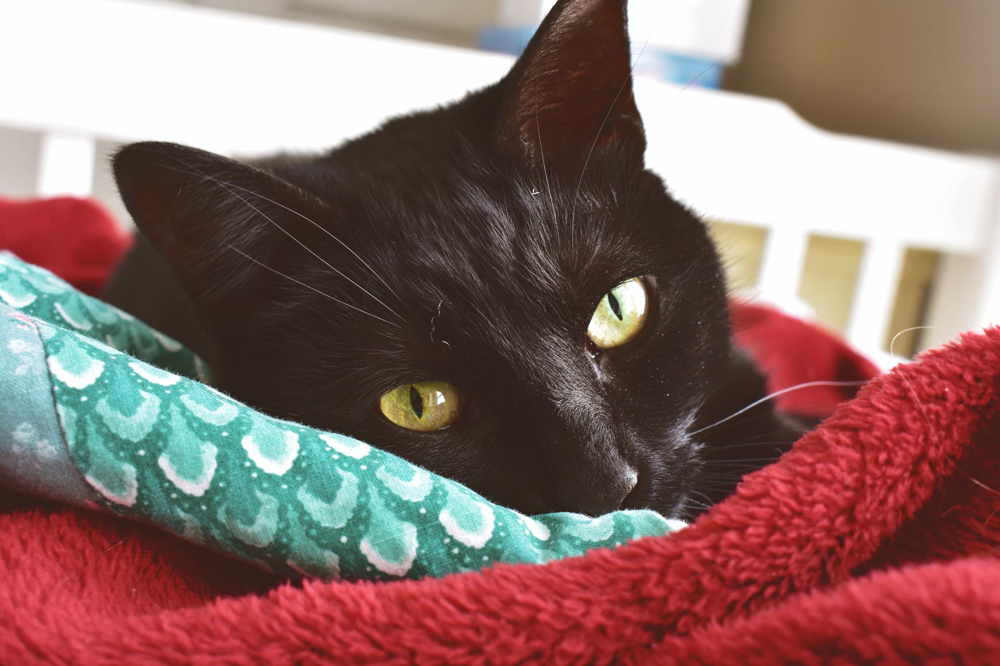

Caring for Cats

You will need some basic supplies before bringing your new cat home.
- Cat carrier box
- Food and water bowls
- Food
- Litter tray and litter
- Scratching post
- Toys
- Safety collar
- Soft bed